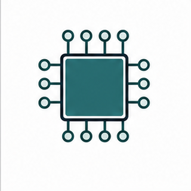

Keys: Left/Right or PageUp/PageDown to move, Home/End to jump, S to toggle slideshow, F for fullscreen, Z for fit/fill, Esc to exit.
Software Timers and the Daemon Task
Software timers represent future tick-based events, but their callbacks run in a FreeRTOS service task rather than in hardware interrupt context.
Course: FreeRTOS Lecture
Embedded Systems Laboratory, Pusan National University
Instructor: Prof. Yunju Baek
Learning path
- Software timer object model
- One-shot versus auto-reload state transitions
- Timer command queue and daemon task context
- Callback design, priority, and queue pressure
- Tutorial 11 source reading and design review
First target: a software timer callback is task-context service work, not an ISR.
01
Course Position
Module 08 explained deferred interrupt processing. Module 09 uses a service task to defer time-based work.

Timer objectA kernel object that records a future expiry time and callback.

Daemon taskThe FreeRTOS timer service task processes timer commands and runs callbacks.

Command queueTimer API calls usually post commands to the timer command queue.
A software timer is a task-context service mechanism built on tick time and a command queue.
02
Why Software Timers Exist
Future action
- A task may need something to happen later.
- A dedicated delay task for every timeout is wasteful.
- A timer object represents the pending action compactly.
Periodic action
- Housekeeping and sampling may need repeated tick-based events.
- Auto-reload timers express repetition without a manual restart.
- Callback duration still affects timing quality.
Deferred context
- The callback runs in the timer service task.
- The callback is not a hardware interrupt.
- Long callbacks can delay other timer callbacks and commands.
Software timers remove extra application tasks only if callbacks remain lightweight.
03
Terminology Before APIs
| Term | Meaning in this module |
|---|
| Software timer | A FreeRTOS kernel object that expires according to the kernel tick count. |
| Timer period | The number of ticks from start or reset to expiry. |
| One-shot timer | A timer that stops after one expiry unless explicitly restarted. |
| Auto-reload timer | A timer that automatically schedules its next expiry after each callback. |
| Timer callback | A function executed by the timer service task when the timer expires. |
| Daemon task | The FreeRTOS timer service task that processes timer commands and executes callbacks. |
| Timer command queue | The internal queue used for start, stop, reset, change period, and pended function commands. |
The word callback does not imply interrupt context.
04
Software Timer Mental Model
Application task or ISRRequests timer start, stop, reset, period change, or pended function work.
→
Timer command queueStores timer service commands until the daemon task processes them.
→
Daemon taskConsumes commands, updates timer state, and runs callbacks on expiry.
→
Application effectCallback sends work onward, toggles state, or wakes another task.
The command queue is the visible boundary between callers and the timer service task.
Timer behavior is queue-mediated service-task behavior.
05
Primary Visual Anchor
Reading Order
- Find the task or ISR that calls a timer API.
- Track the command entering the timer command queue.
- Find the daemon task as the command consumer.
- Ask what happens if the queue is full or the callback runs too long.
Source: FreeRTOS Kernel Book, Figure 6.4.
Use the command queue figure as the central mental model for the module.
06
Hardware Timer Versus Software Timer
| Aspect | Hardware timer interrupt | FreeRTOS software timer |
|---|
| Execution context | ISR context | Timer daemon task context |
| Time base | Peripheral clock and hardware registers | FreeRTOS tick count |
| Callback work | Must be minimal and non-blocking | Still should be short; can affect other timers |
| Best use | Precise capture/compare, PWM, low-level timing | Timeouts, debounce, protocol gaps, periodic housekeeping |
Software timers are convenient, not a replacement for every hardware timing requirement.
07
Timer API Surface
Most timer APIs create commands. Return values matter because the command queue can reject work.
xTimerCreate()xTimerCreateStatic()xTimerStart()xTimerStop()xTimerReset()xTimerChangePeriod()xTimerDelete()pvTimerGetTimerID()xTimerPendFunctionCall()
Create
- Choose dynamic or static storage.
- Provide callback and timer ID.
- Check returned handle.
Command
- Start, stop, reset, change period.
- Use block time only from task context.
- Check pdPASS or pdFAIL.
Inspect
- Use timer ID to find owner state.
- Use return values and trace to confirm behavior.
- Avoid guessing callback timing.
Timer API review starts with command queue behavior.
08
Configuration and Build Switches
Required timer configuration
configUSE_TIMERSconfigTIMER_TASK_PRIORITYconfigTIMER_QUEUE_LENGTHconfigTIMER_TASK_STACK_DEPTH
Configuration questions
- Is the timer service task enabled?
- Can the daemon task run promptly under application load?
- Is the command queue long enough for expected bursts?
- Is the daemon stack large enough for callback code?
Timer behavior is partly a FreeRTOSConfig.h design decision.
09
One-Shot and Auto-Reload Overview
Reading Focus
- One-shot timers stop after the callback.
- Auto-reload timers reschedule themselves after expiry.
- Both are driven by the kernel tick.
- Callback code still runs in the daemon task.
Source: FreeRTOS Kernel Book, Figure 6.1.
One-shot and auto-reload timers represent different state machines.
10
Auto-Reload State Transitions
Reading Focus
- A dormant timer is not counting toward expiry.
- Starting moves it into active timing behavior.
- Expiry triggers callback and automatic reload.
- Stopping or deleting changes the state path.
Source: FreeRTOS Kernel Book, Figure 6.2.
Auto-reload behavior should be read as a state transition diagram.
11
One-Shot State Transitions
Reading Focus
- A one-shot timer becomes dormant after expiry.
- Reset restarts the timing window.
- One-shot timers are natural for timeouts and debounce.
- Restart policy belongs in the design, not in intuition.
Source: FreeRTOS Kernel Book, Figure 6.3.
One-shot timers are useful when a future event should happen once unless reset.
12
Callback Context Rules
Callback should
- Run quickly.
- Send work to a worker task if processing is nontrivial.
- Avoid long loops and slow I/O.
- Use timer ID to locate small owner state.
- Check downstream queue or notification return values.
Callback should avoid
- Blocking for long periods.
- Waiting on resources that can be held by tasks needing timer service.
- Calling slow print or storage functions.
- Starting complex state machines inside the daemon task.
- Assuming it runs at hardware interrupt priority.
A callback can be task context and still be a shared service bottleneck.
13
Timer Command Queue Pressure
Timer API calls can fail when command bursts exceed the configured timer command queue length.
Queue
Start A
Reset B
Change C
Pend Fn
Next?
Evidence
pdPASS
pdPASS
pdPASS
pdPASS
pdFAIL risk
A timer command failure is a design signal: queue length, burst behavior, caller block time, or daemon priority needs review.
Checking timer API return values is mandatory engineering, not defensive ornament.
14
Daemon Priority Above Caller
Reading Focus
- Compare caller priority with daemon task priority.
- Ask when the daemon can process the start command.
- Connect priority to observed start timing.
- Use this figure to discuss latency, not just correctness.
Source: FreeRTOS Kernel Book, Figure 6.5.
Daemon priority changes when timer commands are serviced.
15
Daemon Priority Below Caller
Reading Focus
- A higher-priority caller can continue running after posting the command.
- The daemon may not process the command immediately.
- The apparent timer start time can be misunderstood.
- This is a scheduling interaction, not a timer bug.
Source: FreeRTOS Kernel Book, Figure 6.6.
A posted command is not necessarily processed at the same instant.
16
Resetting a Timer
Reading Focus
- Reset restarts the timing window.
- Repeated resets can postpone expiry.
- This is the core of many debounce and inactivity-timeout designs.
- The reset command itself still passes through timer service behavior.
Source: FreeRTOS Kernel Book, Figure 6.9.
Reset semantics are central to timeout and debounce design.
17
Pended Function Calls
Purpose
- Request a function to run in the timer daemon task.
- Often useful from ISR context for small deferred service work.
- Still shares daemon capacity with timer callbacks.
API family
xTimerPendFunctionCall()xTimerPendFunctionCallFromISR()
Review rule
- The function must be short.
- It should not monopolize the daemon task.
- Use a worker task for heavier processing.
Pended functions are convenient only while they remain service-task scale.
18
Pattern Board
DebounceReset a one-shot timer on every edge; act only when the timer finally expires.
Inactivity timeoutStart or reset a timer when activity occurs; expire when the channel goes quiet.
Periodic housekeepingUse auto-reload for lightweight checks that do not need a dedicated task.
Worker handoffCallback sends a small event to a worker when processing would be too heavy for the daemon task.

Debounce edge
Tick based
Worker handoff
A timer pattern is a time policy plus callback discipline.
19
Failure Modes Worth Naming Early
Long callback
- A callback performs parsing, printing, or slow I/O.
- Other callbacks and commands wait behind it.
- Move heavy work to a worker task.
Low daemon priority
- Callbacks arrive late under CPU load.
- Command queue may accumulate.
- Review priority relative to time-sensitive tasks.
Command queue full
- Start, reset, or pended function command fails.
- Caller ignores pdFAIL.
- Increase queue length only after analyzing burst sources.
Timer bugs often look like timing bugs but start as service-task design bugs.
20
Diagnostic Evidence
Daemon state

Callback latency

Trace

Return checks
Timing evidence
- Command call timestamp.
- Daemon processing timestamp.
- Callback entry and exit timestamp.
Capacity evidence
- Timer API return values.
- Command queue pressure.
- Number of callbacks waiting.
Configuration evidence
- Daemon task priority.
- Queue length.
- Daemon stack high-water mark.
Measure the command path before changing priorities or periods.
21
Tutorial 11 Reading Path
Create
Find xTimerCreate or xTimerCreateStatic, period, reload mode, callback, and timer ID.
Start
Find xTimerStart, block time, return-value check, and caller priority.
Callback
Read the callback as daemon-task code and identify any work that should be handed to another task.
Variation
Change reload mode or period and predict the output before running the tutorial.
Students should explain timer state and daemon context before reading output.
22
Mini Case: Button Debounce
GPIO edgeISR or task observes a possibly bouncing edge.
→
Reset one-shot timerEvery new edge restarts the quiet interval.
→
Timer callbackRuns only after no edge resets the timer for the full period.
→
Clean eventCallback notifies UI or control task of a stable button event.
Debounce is a reset semantics lesson, not only a button example.
23
Mini Case: Communication Timeout
Start condition
- Request sent.
- Expected response window begins.
- One-shot timer starts.
Normal response
- Response arrives before expiry.
- Timer is stopped or reset.
- Protocol task continues.
Expiry path
- Callback sends timeout event.
- Protocol task decides retry or failure.
- Callback does not implement the full protocol.
The callback should report timeout, not become the protocol task.
24
Mini Case: Periodic Health Monitor
Auto-reload fit
- Periodic check interval.
- Small amount of work.
- Callback period tolerance acceptable.
Worker handoff fit
- Health check reads several subsystems.
- Logging or communication may be slow.
- Callback sends a short command to a monitor task.
Evidence
- Callback duration.
- Monitor task backlog.
- Missed deadline count.
- Daemon high-water mark.
Periodic does not automatically mean safe inside the callback.
25
Source Reading: timers.c
Timer list managementRead how active timers are tracked and how expiry is detected.
Command processingFind command types for start, stop, reset, change period, delete, and pended functions.
Callback executionConfirm that callbacks execute through the timer service task path.
Do not teach timers as magic delays; teach them as source-visible command processing.
The implementation confirms the command-queue mental model.
26
Source Reading: queue.c and tasks.c Links
queue.c connection
- Timer command queue uses queue mechanisms.
- Command send failure has queue-capacity roots.
- Return values expose pressure.
tasks.c connection
- Daemon task priority determines when service work runs.
- Callback execution competes with other Ready tasks.
- Blocking or preemption behavior still follows scheduler rules.
Timers reconnect queue behavior and scheduling behavior.
27
Design Decision Table
| Decision | Question | Evidence |
|---|
| Timer type | Should expiry happen once or repeatedly? | One-shot or auto-reload state transition |
| Callback work | Can this code safely run in the shared daemon task? | Measured callback duration and queue impact |
| Command burst | Can callers flood start, reset, or pended-function commands? | Return value checks and command queue length |
| Daemon priority | When must timer commands and callbacks run under load? | Trace timing and priority review |
| Alternative | Would a dedicated task or hardware timer be clearer? | Precision, workload, and ownership requirements |
Timer design is a scheduling and service-capacity decision.
28
Testing Checklist
Nominal path
- Timer created successfully.
- Start/reset command returns pdPASS.
- Callback runs at expected sequence point.
Pressure path
- Burst reset commands.
- CPU load above daemon priority.
- Slow callback inserted intentionally.
Failure path
- Return values checked.
- Command queue pressure visible.
- Worker handoff protects daemon task.
A timer demo should include one pressure path, not only a blinking success path.
29
Code Review Checklist
API review
- Is configUSE_TIMERS enabled?
- Are handles checked after create?
- Are command return values checked?
- Is block time legal for caller context?
Design review
- Is callback work short?
- Is daemon priority justified?
- Is command queue length justified?
- Is a worker task used for heavy processing?
Review timer code as service-task code plus queue commands.
30
Object Choice and Alternatives
Alternative Questions
- Is this really a future event?
- Does work need precise hardware timing?
- Should expiry wake a worker task instead of doing work directly?
- Could vTaskDelayUntil be clearer for a periodic task?
- Is a hardware timer peripheral required?
Good timer design includes knowing when not to use a software timer.
31
Project Boundary Check
Build
- Create a one-shot timer.
- Create an auto-reload timer.
- Log callback entry and exit.
Modify
- Change daemon task priority.
- Increase reset command burst.
- Move heavy callback work into a worker task.
Explain
- Draw the command queue path.
- Explain observed callback timing.
- Document return-value checks.
The lab output should show command path evidence.
32
Classroom Board Questions
What expires?
- Timer object.
- Period in ticks.
- One-shot or auto-reload state.
Who runs?
- Timer daemon task.
- Not hardware ISR.
- Priority set by configTIMER_TASK_PRIORITY.
What can fail?
- Create failure.
- Command queue full.
- Late callback.
- Overlong callback.
These three questions usually expose timer misconceptions.
33
Review Questions
Question 1
Why is a software timer callback not the same thing as a hardware timer interrupt handler?
Question 2
Why can xTimerStart return failure, and what should the application do with that evidence?
Question 3
How can daemon task priority change the observed timing of a timer command?
A strong answer names daemon context, command queue, and scheduler priority.
34
One-Slide Summary
Mechanism
- Timer APIs post commands.
- Daemon task processes commands.
- Callbacks run in daemon task context.
Design rule
- Keep callbacks short.
- Check command return values.
- Use worker tasks for heavy work.
Evidence
- Command queue pressure.
- Callback entry and exit timing.
- Daemon priority and stack usage.
A software timer is a service-task design tool.
35
Bridge to Module 10
Module 10 moves from time-based service work to synchronization objects: semaphores, mutexes, and short critical sections.
TimerA future event represented by a kernel object.

SemaphoreA signal or count used for synchronization.
MutexAn ownership object for shared resource protection.
The next module shifts from time policy to ownership and synchronization policy.
36
References and Further Reading
References used in this module are separated from optional deeper reading.
References Used
- FreeRTOS Kernel Book, Chapter 6, Software Timer Management.
- FreeRTOS Kernel Book, Figures 6.1, 6.2, 6.3, 6.4, 6.5, 6.6, and 6.9.
- Lab Project FreeRTOS Tutorials, Tutorial 11.
- FreeRTOS Kernel source: timers.c, queue.c, and tasks.c.
Further Reading
- FreeRTOS API reference: software timer APIs and pended function calls.
- FreeRTOSConfig.h reference: configUSE_TIMERS, configTIMER_TASK_PRIORITY, configTIMER_QUEUE_LENGTH, and configTIMER_TASK_STACK_DEPTH.
- MCU reference manual timer chapter for comparing hardware timer precision with RTOS software timer behavior.
- Tracealyzer or FreeRTOS trace documentation for observing daemon task execution and timer callback latency.
References should support traceability and direct further study.
37